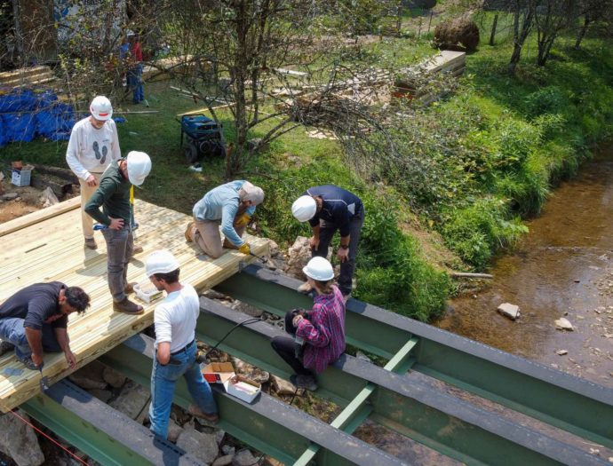
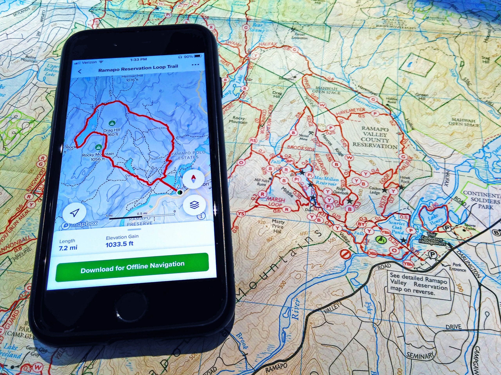

My Projects
Project A
Contributed to a number of different versions of software upgrades on the avionics equipment of multiple aircraft types
Learn more about this project here.
Project B

Not quite sure what to say about this one but I feel like building bridges is a great thing to do becaue then people can cross over bodies of water without getting wet.
Learn more about this project here.
Project C

Something I love to do when I can't sleep is look at Apple Maps on my phone and go down rabbit holes of different cities around the world. A career path I'm legitimately interested in is GIS technician and look forward to learning more about it!
Learn more about this project here.